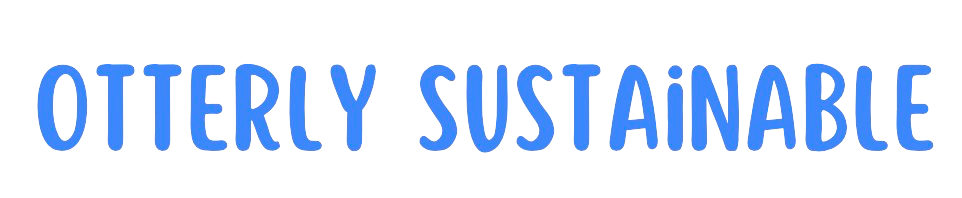
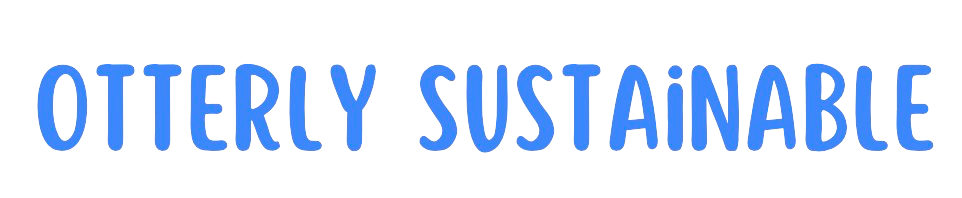
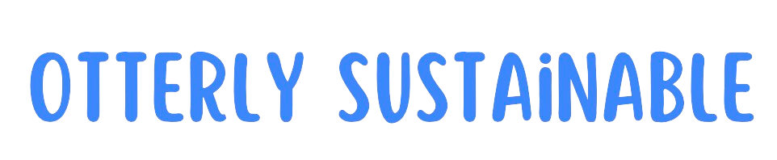
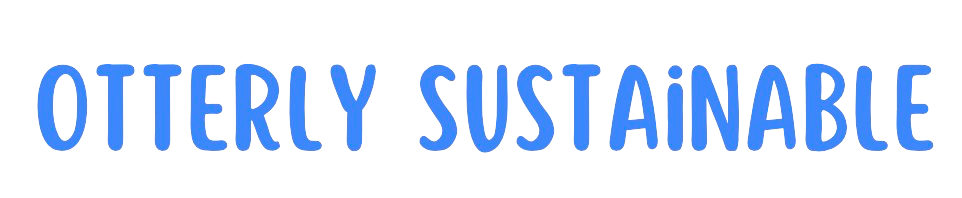

In the heart of Ennis lies the majestic River Fergus, a haven for otters, salmon, and trout, offering not just natural beauty but also untapped potential for sustainable energy. Harnessing the river's inherent vibrations through Vortex-Induced Vibration (VIV) technology, our initiative, "Otterly Sustainable," aims to generate eco-friendly electricity. By strategically placing generators along the river, including at Knox bridge and Newton Stacpoole House, we ensure minimal disruption to the natural habitat while maximizing energy output, thus paving the way for a cleaner, more sustainable future.

Recent years have witnessed a decline in air quality in Ennis, despite its recognition as Ireland's cleanest city. High levels of PM2.5 particles pose health risks to residents and visitors alike, prompting the need for sustainable solutions. By harnessing the power of the River Fergus through innovative technology, we address environmental concerns while preserving the well-being of the community and the charm of Ennis for generations to come.
Our approach revolves around leveraging the natural movements of aquatic life in the River Fergus to generate electricity sustainably. Through Vortex-Induced Vibration (VIV) technology, we capture the subtle vibrations created by otters, salmon, and other aquatic creatures as they navigate their habitat. By strategically placing generators along the river, such as at Knox bridge and Newton Stacpoole House, we ensure minimal disruption to the ecosystem while maximizing energy production, thus advancing towards a greener, more sustainable future. (See more)
Our foremost priority is to address environmental issues affecting Ennis, such as declining air quality, by providing innovative, sustainable solutions. We aim to preserve the natural beauty and ecological balance of the River Fergus while meeting the energy needs of the community. Additionally, we prioritize community well-being, ensuring that our initiatives benefit residents and visitors alike, safeguarding their health and enhancing their quality of life. Through strategic planning and technological innovation, we strive to create a cleaner, more sustainable future for Ennis and beyond.